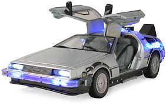

My name is Ray and I am from San Antonio. I like to travel and walks on the beach.
I really enjoy sports, especially football and basketball.
Treat others as you want to be treated
I love to go to the beach for vacation.
Tom Hanks is an amazing actor but I would not go on vacation with him
as bad things tend to happen when he is traveling.
This is a Delorean. It is not the fastest car in the world but it will get you where you want to go. Its max speed is only 88 mph. One special feature is that the doors swing up and there are only two seats. It also does not run on traditional fuel. Previous versions ran on plutonium but it can now run on plain garbage. Oh yeah, it is also a time machine capable of going back in time or into the future.
| Decimal | Hexadecimal |
|---|---|
| 0 | 0 |
| 1 | 1 |
| 2 | 2 |
| 3 | 3 |
| 4 | 4 |
| 5 | 5 |
| 6 | 6 |
| 7 | 7 |
| 8 | 8 |
| 9 | 9 |
| 10 | A |
| 11 | B |
| 12 | |
| 13 | |
| 14 | |
| 15 |